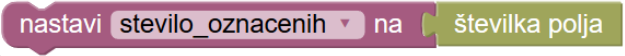
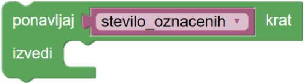
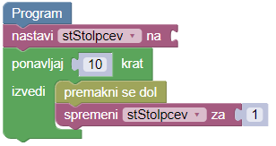

Pobarvaj s številko


Napiši zmajčku navodilo, po katerem bo pobarval označena polja.
Številka pred zmajčkom namiguje, koliko kvadratov je označenih dve polji naprej. Seveda se mora številko prebrati, jo shraniti v spomin določene spremenljivke in potem uporabiti vsebino spremenljivke v programu.
Številko prebereš in shraniš v spremenljivko 'steviloOznacenih' tako, da nadaljuješ za en kvadrat in potem sestaviš naslednje navodilo:

Spremenljivko lahko uporabiš tam, kjer potrebuješ njeno vrednost, na primer:

Pred zmajčkom se nahajata dve številki: število vrstic in število stolpcev pravokotnega področja polj, ki jih zmajček mora pobarvati.
Za reševanje te naloge potrebuješ dve spremenljivki, da lahko shraniš tisti dve številki. Imenuj jih na primer 'stVrstic' in 'stStolpcev'. V tej različici so bloki razdeljeni po kategorijah v meniju. S klikom na meni lahko dostopaš do blokov v izbrani kategoriji.
Pred zmajčkom najdeš številko, ki ti pove, koliko vrstic in stolpcev ima trikotno območje, ki ga zmajček mora pobarvati.
Pravilne številke naslikaj v kvadrate vsake vrstice tako, da ustvariš spremenljivko, ki mora za vsako vrstico vsebovati število označenih polj. Ko zmajček vsako vrstico pobarva, se vsebini te spremenljivke prišteje 1. Lahko si ogledaš naslednji primer:

Namig: Naloga ima dva testa. Program mora delovati na obeh testih.